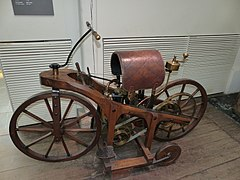
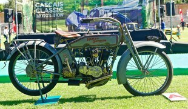
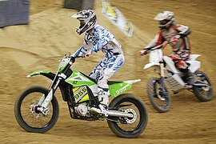

L'histoire de la moto est une saga captivante qui remonte au 19ème siècle, lorsque Gottlieb Daimler et Wilhelm Maybach, deux visionnaires allemands, ont conçu le tout premier prototype de ce qui allait devenir l'ancêtre de la moto moderne. Cette première machine, équipée d'un moteur à combustion interne, a ouvert la voie à une révolution dans le domaine des transports personnels.
"L'Histoire de la Moto : Une Épopée de Liberté et d'Innovation
Au cours du 20ème siècle, la moto est devenue bien plus qu'un simple moyen de se déplacer. Elle est devenue un symbole de liberté, d'aventure et de contre-culture. Des marques emblématiques telles que Harley-Davidson , Indian et Triumph ont émergé, façonnant l'image et l'identité de la moto avec leurs designs audacieux et leur ingénierie innovante.
"Les années suivantes ont vu l'émergence de différents types de motos, chacune adaptée à des besoins spécifiques, des courses de vitesse sur piste aux voyages tout-terrain à travers des terrains difficiles. Les motos sont devenues des compagnons de route fidèles pour des millions de personnes à travers le monde, offrant un sentiment de liberté et d'indépendance sur deux roues.
Dans le monde contemporain, l'histoire de la moto continue de s'écrire avec de nouvelles avancées technologiques. Les motos électriques gagnent en popularité en raison de leur faible impact environnemental et de leur performance impressionnante. De plus en plus, les motards recherchent des moyens de combiner la passion pour la conduite avec le respect de l'environnement.
"Quelle que soit l'époque ou le style, l'histoire de la moto est une célébration de l'ingéniosité humaine, de la passion pour l'aventure et du désir de repousser les limites. C'est une histoire d'exploration, d'expression personnelle et de camaraderie partagée sur la route ouverte. La moto reste un symbole intemporel de liberté et de passion pour ceux qui osent monter en selle et parcourir l'horizon.